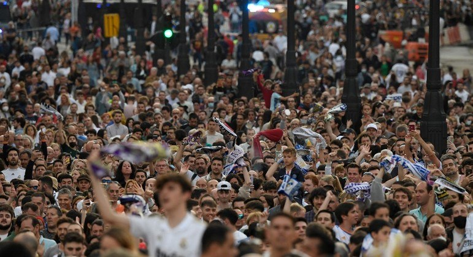
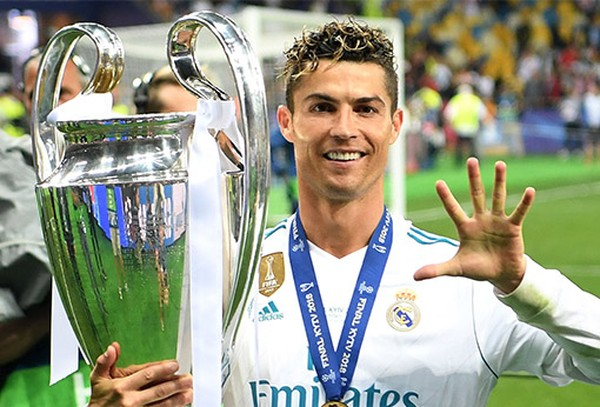
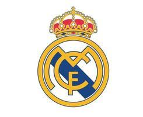

Vinicius Jr. é um talentoso jogador brasileiro que atualmente faz parte do elenco do Real Madrid Club de Fútbol, um dos clubes mais prestigiados do mundo.
Sua jornada no Real Madrid tem sido marcada por momentos de brilhantismo, onde ele tem demonstrado suas habilidades únicas e se estabelecido como uma peça importante no time.
Com sua velocidade, técnica refinada e capacidade de desequilibrar, Vinicius Jr. tem conquistado os corações dos torcedores merengues e ganhado reconhecimento internacional.
Sob o icônico uniforme branco do Real Madrid, Vinicius Jr. continua a escrever sua história no futebol mundial, representando uma das maiores instituições do esporte.

Créditos da imagem: [Eric Alonso/Getty Imagens]
A torcida do Real Madrid é conhecida mundialmente por sua paixão inigualável pelo clube e seu apoio incansável durante os jogos.
Com milhões de fãs espalhados por todo o mundo, a torcida merengue é uma das mais numerosas e fervorosas do futebol.
Nos estádios, os torcedores do Real Madrid formam um mar branco e vibrante, cantando, gritando e celebrando cada gol com uma energia contagiante.
Mas o apoio da torcida não se limita apenas aos jogos. Os torcedores do Real Madrid demonstram sua devoção ao clube em todos os momentos, seja nas redes sociais, nas ruas ou em eventos especiais.
Créditos da imagem: [Oscar del Pozo]
Cristiano Ronaldo, também conhecido como CR7, é uma das figuras mais proeminentes e influentes no mundo do futebol.
Nascido na Ilha da Madeira, Portugal, Ronaldo começou sua carreira no Sporting Clube de Portugal antes de se tornar um dos jogadores mais bem-sucedidos e celebrados de todos os tempos.
Sua passagem por clubes como Manchester United, Real Madrid e Juventus foi marcada por conquistas extraordinárias, incluindo múltiplos títulos nacionais e internacionais, bem como prêmios individuais de prestígio, como a Bola de Ouro da FIFA.
Mas o legado de Cristiano Ronaldo vai além das estatísticas e troféus. Sua ética de trabalho incansável, dedicação ao esporte e compromisso com a excelência o tornaram um exemplo para milhões de fãs em todo o mundo.
Créditos da imagem: [Inserir créditos aqui]
O Real Madrid Club de Fútbol é uma das instituições esportivas mais prestigiadas e bem-sucedidas do mundo.
Fundado em 1902, o Real Madrid possui uma rica história repleta de conquistas e momentos memoráveis, tornando-se um símbolo do futebol mundial.
O clube espanhol conquistou inúmeras competições importantes ao longo dos anos, incluindo 34 títulos da La Liga, 13 títulos da Liga dos Campeões da UEFA e 19 títulos da Copa do Rei, entre outros.
Além de sua excelência nos gramados, o Real Madrid é conhecido por sua grandeza fora de campo, com uma base de torcedores apaixonados e uma reputação de liderança e inovação no mundo do futebol.
A rivalidade entre Real Madrid e Atlético de Madrid é uma das mais intensas e históricas do futebol espanhol.
Os dois clubes, ambos baseados na cidade de Madrid, têm competido ferozmente por décadas em diversos torneios nacionais e internacionais.
Os confrontos entre Real Madrid e Atlético de Madrid são conhecidos por sua emoção, tensão e drama, com partidas muitas vezes decididas nos momentos finais e com reviravoltas inesperadas.
Essa rivalidade é alimentada não apenas pela proximidade geográfica, mas também pela busca incessante por supremacia na capital espanhola e além.